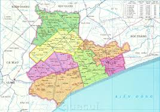

Bạc Liêu là một tỉnh thuộc duyên hải vùng bằng sông Cửu Long, nằm trên bán đảo Cà Mau, miền đất cực Nam của Việt Nam.
Bạc Liêu có nhiều dân tộc khác nhau sinh sống như người Hoa, người Việt, người Khmer, người Chăm... Người Bạc Liêu có phong cách phóng khoáng, đặc trưng của vùng Nam Bộ. Bạc Liêu có Công tử Bạc Liêu lừng danh một thuở giàu có và chịu chơi, ngoài ra vùng đất này còn gắn liền với tên tuổi của nhạc sĩ Cao Văn Lầu và bài Dạ cổ hoài lang đặt nền móng cho sự phát triển của nền cổ nhạc Nam Bộ. Bạc Liêu được nhiều người biết đến bởi nghề làm muối, muối Bạc Liêu xưa nay vốn nổi tiếng về chất lượng do không có vị đắng, chát và ít lẫn tạp chất. Thời Pháp, Mỹ, hoạt động kinh doanh muối Bạc Liêu rất rộng lớn, chiếm cứ toàn vùng Nam Bộ, ra tới tận Phan Thiết miền Trung và đặc biệt giao lưu xuất khẩu theo đường sông Cửu Long qua Campuchia, hiện nay nghề làm muối tuy không còn thịnh như trước nhưng Bạc Liêu vẫn là vùng sản xuất muối lớn nhất miền Tây.
Bạc Liêu từng là vùng đất có một vị trí quan trọng trong chiến lược khai thác và xây dựng vùng Đồng bằng sông Cửu Long của người Pháp, được người Pháp lên kế hoạch xây dựng thành trung tâm hành chính của miền Tây, đồng thời đầu tư nhiều tiền của xây cất dinh thự và công sở tại đây. Bạc Liêu cũng là vùng đất có nhiều người Hoa sinh sống qua câu ca dao:
| “ |
Bạc Liêu là xứ cơ cầu Dưới sông cá chốt trên bờ Triều Châu. |
” |
| — Ca dao Việt Nam | ||
-
Nguồn gốc tên gọi
-
Vị trí địa lý
- Phía bắc giáp với tỉnh Hậu Giang
- Phía đông và đông bắc giáp với tỉnh Sóc Trăng
- Phía tây nam giáp với tỉnh Cà Mau
- Phía tây bắc giáp với tỉnh Kiên Giang
- Phía đông nam giáp với Biển Đông với đường bờ biển dài 56 km.
- Điểm cực Bắc ở vĩ độ 9o37’00’’ Bắc tại xã Vĩnh Lộc A, huyện Hồng Dân.
- Điểm cực Nam ở Vĩ độ 9o00’00’’ Bắc tại thị trấn Gành Hào, huyện Đông Hải.
- Điểm cực Tây ở Kinh độ 105o15’00’’ Đông tại xã Tân Thạnh, thị xã Giá Rai.
- Điểm cực Đông ở Kinh độ 105o52’30’’ Đông tại xã Hưng Thành, huyện Vĩnh Lợi.
- Điều kiện tự nhiên
- Hành Chính
Tỉnh Bạc Liêu từ khi thành hình đã lấy tên của con rạch Bạc Liêu (có giả thuyết cho rằng do Poanh Liêu mà ra, tức là nơi có Đạo quân Lào trú đóng thời xưa). Tên gọi "Bạc Liêu", đọc giọng Triều Châu là "Pô Léo", có nghĩa là xóm nghèo, làm nghề hạ bạc, tức nghề chài lưới, đánh cá, đi biển. Pô phát âm theo tiếng Hán Việt là "Bạc" và Léo phát âm là "Liêu". Ý kiến khác lại cho rằng "Pô" là "bót" hay "đồn", còn "Liêu" có nghĩa là "Lào" (Ai Lao) theo tiếng Khơme, vì trước khi người Hoa kiều đến sinh sống, nơi đó có một đồn binh của người Lào. Còn đối với người Pháp, họ căn cứ vào tên Pô Léo theo tiếng Triều Châu nên họ gọi vùng đất này là Phêcheri - chaume có nghĩa là "đánh cá và cỏ tranh". Tuy nhiên cũng có ý kiến cho rằng tên gọi Bạc Liêu xuất phát từ tiếng Khmer Po Loenh, nghĩa là cây đa cao.
Tỉnh Bạc Liêu nằm trên bán đảo Cà Mau, thuộc Đồng bằng sông Cửu Long, cực nam của (Việt Nam), với diện tích đất tự nhiên là 2.669 km2, chiếm gần 0,8% diện tích cả nước và đứng thứ 7 trong khu vực Đồng bằng sông Cửu Long, có vị trí địa lý:
|
Tọa độ địa lý của tỉnh Bạc Liêu: |
 |
|---|
Vùng biển thuộc quyền quản lý của tỉnh Bạc Liêu rộng hơn 40.000 km2 là một vùng biển giàu tiềm năng, nguồn lợi hải sản rất phong phú và đa dạng
Bạc Liêu nằm ở vị trí trung chuyển trên tuyến đường giao thông huyết mạch quan trọng của cả nước (Quốc lộ 1A), cách thành phố Cần Thơ khoảng 110 km và thành phố Hồ Chí Minh khoảng 280 km về phía Bắc; hiện nay còn có các tuyến đường mới như Nam Sông Hậu, Ngã Bảy (tỉnh Hậu Giang) đến thành phố Cà Mau (Quản Lộ - Phụng Hiệp) đi qua địa phận tỉnh Bạc Liêu. Đây là điều kiện rất thuận lợi cho Bạc Liêu trong sự giao lưu, phát triển kinh tế xã hội.
Bạc Liêu có địa hình khá bằng phẳng, không có đồi, núi chính và thấp vì lẽ đó cũng không có các chấn động địa chất lớn. Địa hình chủ yếu là đồng bằng, sông rạch và kênh đào chằng chịt. Độ cao khoảng từ 0,8 đến 1,5m so với mặt biển. Hướng nghiêng đia hình từ đông bắc xuống tây nam, độ nghiêng trung bình từ 1 đến 1,5 cm/km. Trong vùng có nhiều ô trũng như: các huyện Hồng Dân, Phước Long và thị xã Giá Rai thuộc vùng trũng của trung tâm bán đảo Cà Mau. Các giồng cat ven biển tạo hướng nghiêng từ biển vào trong nội đồng. Trên địa bàn tỉnh có nhiều kênh rạch lớn như: Quản Lộ - Phụng Hiệp, kênh Cạnh Điền, kênh Phó Sinh, kênh Giá Rai chia cắt địa hình của tỉnh.
Thềm lục địa mở rộng, biển nông và bãi biển thoải từ 30 đến 70, dòng biển Đông Bắc ổn định, có vai trò quan trọng trong bồi tụ, mỗi năm mở rộng thêm ra biển hơn 30m tạo nên các bãi bồi. Bãi bồi mở tới đâu thì rừng ngập mặn tiến ra tới đó. Tuy nhiên, đoạn từ Ấp Gò Cát (xã Điền Hải) tới thị trấn Gành Hào (huyện Đông Hải) lại đang diễn ra quá trình sạc lở cửa sông và bờ biển lại rất mạnh, khoảng 10m/năm.
Bạc Liêu nằm ở vĩ độ thấp, trong khu vực gió mùa nên khí hậu Bạc Liêu mang tính chất cận xích đạo gió mùa (nhiệt đới gió mùa) rất điển hình, với nền nhiệt cai và ổn định, biên nhiệt dao độngtrong năm nhỏ, lượng mưa lớn, mưa theo mùa và thất thường.
Do góc nhập xạ quanh năm lớn nên tổng lượng bức xạ Mặt Trời lớn. Nhiệt độ trung bình năm dao dộng trong khoảng 26 - 270C. Tháng nóng nhất là tháng 5 nhiệt độ 35 - 360C và có khi lên tới 370C, có nhiệt độ trung bình trên 290C và tháng thấp nhất là tháng 1 nhiệt độ 200C và có khi từ 18 - 200C, có nhiệt độ trung dưới 250C. Biên độ nhiệt năm trung bình khoảng 3,60C. Bạc Liêu có bờ biển khá dài, ven biển và trong đất liền nên có tiềm năng lớn về phát triển điện mặt trời.
Bạc Liêu có lượng mưa vào loại trung bình so với khu vực Đồng bằng sông Cửu Long. Lượng mưa trung bình năm khoảng trên 1700 mm/năm. Mưa tập trung chủ yếu vào mùa mưa (từ tháng 5 đến tháng 11), chiếm khoảng hơn 93% tổng lượng mưa cả năm. Mùa khô từ tháng 12 đến tháng 4 năm sau, lượng mưa không đáng kể.
tỉnh Bạc Liêu có 7 đơn vị hành chính cấp huyện, bao gồm 1 thành phố, 1 thị xã và 5 huyện, trong đó có 64 đơn vị hành chính cấp xã, gồm có 10 phường, 5 thị trấn và 49 xã (bao gồm 518 khóm, ấp).
| Ðơn vị hành chính cấp Huyện | Thành phố Bạc Liêu |
Huyện Giá Rai |
Huyện Đông Hải |
Huyện Hòa Bình |
Huyện Hồng Dân |
Huyện Phước Long |
Huyện Vĩnh Lợi |
| Diện tích (km²) | 213,8 | 354,5 | 579,6 | 426,5 | 424 | 417,8 | 252,8 |
|---|---|---|---|---|---|---|---|
| Dân số (người) | 157.389 | 142.790 | 149.814 | 111.899 | 109.993 | 122.962 | 102.173 |
| Mật độ dân số (người/km²) | 736 | 403 | 259 | 262 | 259 | 294 | 404 |
| Số đơn vị hành chính | 7 phường, 3 xã | 3 phường, 7 xã | 1 thị trấn, 10 xã | 1 thị trấn, 7 xã | 1 thị trấn, 8 xã | 1 thị trấn, 7 xã | 1 thị trấn, 7 xã |
| Năm thành lập | 2010 | 2015 | 2002 | 2005 | 1947 | 1920 | 1900 | Nguồn: Niên giám thống kê tỉnh Bạc Liêu năm 2018 |